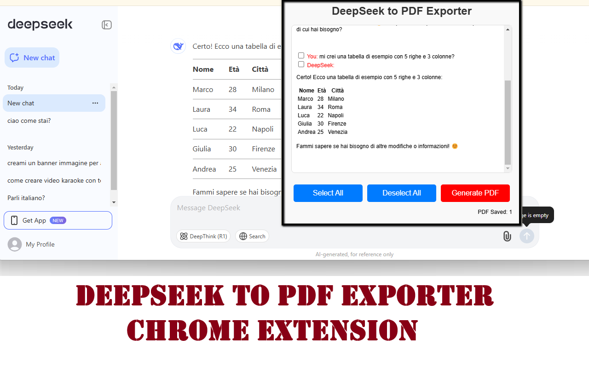

Deepseek PDF Exporter
Want to save your Deepseek conversations as professional, high-quality PDFs Deepseek PDF Exporter lets you export any AI chat youve had on Deepseek into a clean, well-formatted document perfect for studying, sharing, or archiving.
You can choose which questions and answers to include, make edits before exporting, and even preview your final PDF layout in real time. It works entirely inside your browser and doesnt require logging in or creating an account.
Whether you're summarizing research, building content drafts, or backing up your learning sessions, this extension is fast, accurate, and beautifully simple to use.
📄How to Use
- Install the extension from the Chrome Web Store.
- Open your conversation on Deepseek.
- Click the extension icon to launch the exporter UI.
- Select which messages to include, and click Preview.
- Click Generate PDF to download your full chat.
✅ Features
- Select which messages to include in your export
- Edit messages before generating the PDF
- Live preview of your final PDF output
- Clean formatting with support for bold text and lists
- No watermark, no registration, no nonsense
📷 Screenshots


Deepseek PDF Exporter is the easiest way to archive and print your AI interactions. Give it a try and simplify your research and study workflow!
View on Chrome Web Store